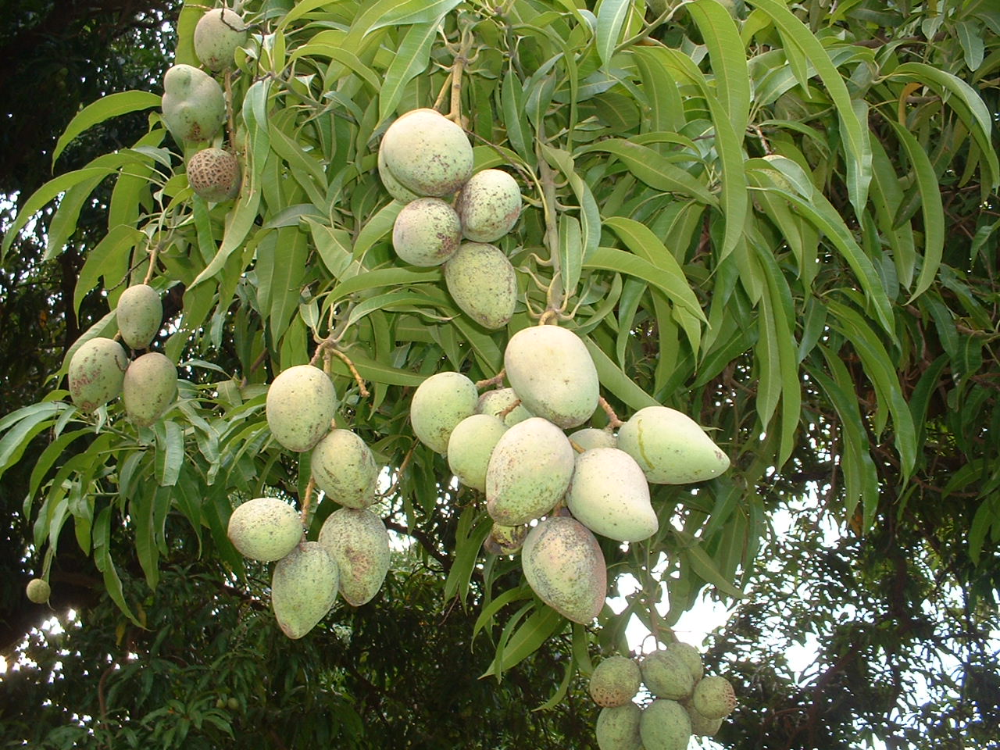

<md-dialog aria-label="Mango (Fruit)">
    <form ng-cloak>
        <md-toolbar>
            <div class="md-toolbar-tools">
                <h2>이곳에 제목을 입력하세요.</h2>
                <span flex></span>
                <md-button class="md-icon-button" ng-click="cancel()">
                <md-icon md-svg-src="img/icons/ic_close_24px.svg" aria-label="Close dialog"></md-icon>
                </md-button>
            </div>
        </md-toolbar>

        <md-dialog-content>
            <div class="md-dialog-content">
                <h2>이곳에 본문 제목을 입력하세요.</h2>
                <p>본문 내용 1</p>
                
                <p>본문 내용 2</p>
                <p>본문 내용 3</p>
            </div>
        </md-dialog-content>

        <md-dialog-actions layout="row">
            <md-button href="http://en.wikipedia.org/wiki/Mango" target="_blank" md-autofocus>Go Wiki</md-button>
            <span flex></span>
            <md-button ng-click="answer('not useful')">Not Useful</md-button>
            <md-button ng-click="answer('useful')">Useful</md-button>
        </md-dialog-actions>
    </form>
</md-dialog>
